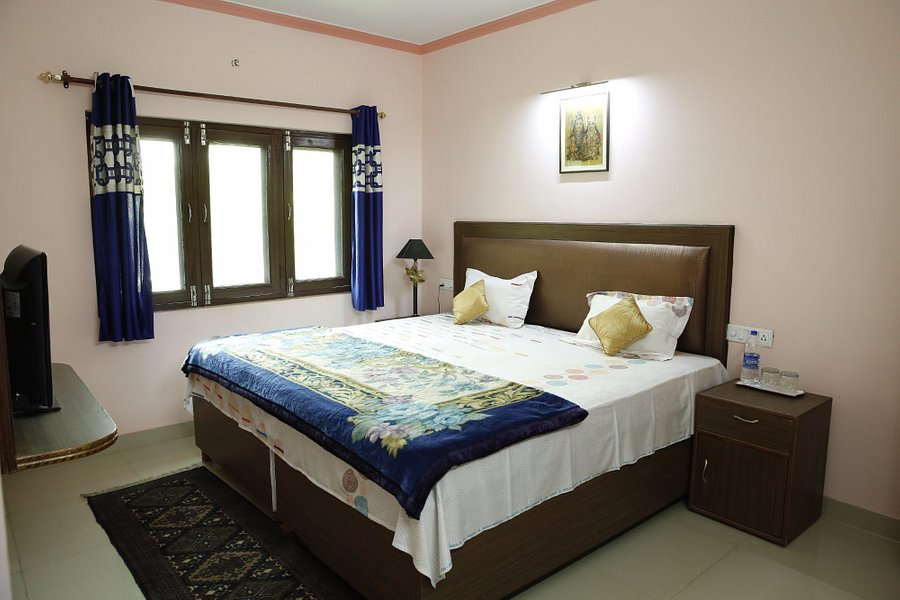
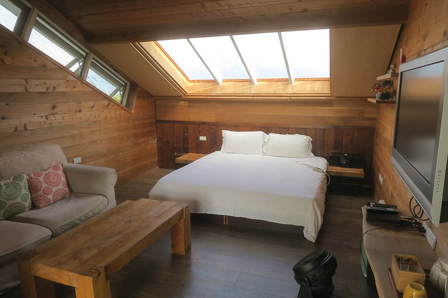

There are bed and breakfasts. Here, you don't just get a bed, you're welcomed into an exquisite Colonial-style ancestral property. And you don't just get breakfast, you're given an unforgettable gastronomic experience.
An ancestral home, it was restored and converted into a bed and breakfast in 2011. Inside, it's full of family treasures that blend in beautifully with the contemporary touches that have been added.
The guest accommodations occupy the whole top floor. There are four bedrooms, all with ensuite bathrooms. Just like the rest of the house, the bedrooms are gorgeously decorated in classic style with contemporary accents. The highlight of the main guest room is a solid wood four poster bed.
Activities: Reading books from the shelves, nature walks, bird photography.
Special Features: The gourmet food at Sunnymead is on par with that of a fine dining restaurant. It's prepared using fresh ingredients from the garden.
Rate: 6,000 rupees per night for a double and 4,500 rupees per night for a single.

The room services of these hotels ensure that all the amenities are appropriately provided to the patrons. The
toothsome dishes served in the restaurants of these hotels are great to be a magnet for the travellers who are the aficionados of food.
In addition, the budget hotels in Kerala are best for those who want a cost-effective accommodation in order to take pleasure
in the trip in limited resources. The hotels tender travel desk and all the basic facilities that make the stay snug and pleasurable.
The accommodation options are so enormous in range that the varying tariffs go well with all sizes of pockets. The travellers can select
from the broad range of hotels and enjoy a lovely vacation in the lap of scenery.

The hotels and resorts in Kochi are meticulously laid with all the best in class amenities endowed with warm hospitality. The rooms of these
hotels are designed with grace and are well-equipped with top-notch amenities and all the rooms are spacious and airy as well. In addition, the dining services of these
hotels slip in a list of mouth watering dishes. Varying from luxurious to budget hotels, Kochi has a perfect accommodation option for every tourist. Some of the best
luxury hotels and resorts in Kochi are Brunton Boatyard a CGH Earth Group, Malabar House, Courtyard by Marriott, etc.